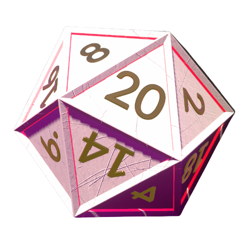
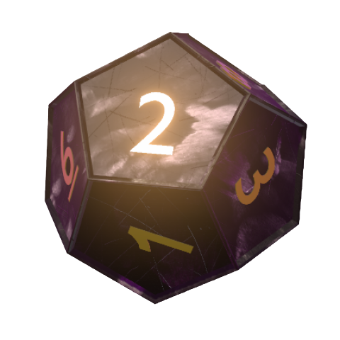
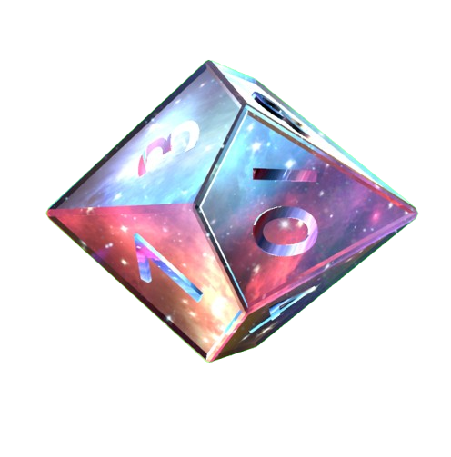
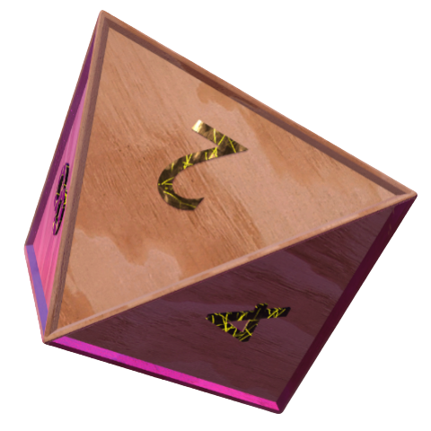
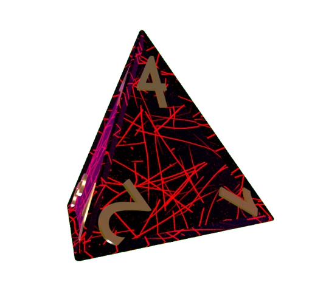

Features:
-
🎲 Intuitive Interface: Our user-friendly interface ensures a seamless
and enjoyable experience, allowing you to roll various types of dice
with just a tap or click.
-
🎲 Realistic Animations: Enjoy realistic physics-based dice rolling
animations that bring an authentic tabletop feel to your virtual
rolls.
-
🎲 Random Number Generation: Built on a robust random number and
physics based, our app ensures fair and unpredictable results every
time.
- 🎲 The rolled number will appear at the top of the screen.
Releases: Stay up-to-date with our regular releases that bring exciting
new features, bug fixes, and performance enhancements to the dice rolling
experience. Each release is thoroughly tested to provide you with a
reliable tool for your gaming adventures.
Version 0.1
-
Includes 5, 20 faced dice
- White Dice
- Black Dice
- Cracked Dice
- Wood Dice
- Magma Dice
-
Supports platforms
- Windows x32 / x86
- Windows x64
- Android (x32)
Next Version
List of features to be implemented
-
4, 6, 8 and 12 faced dice
(The platonic solids)
- Motion Blur
- Menu to select dice
- Improve performance
Dice v 1.Null
New Features
List of the features implemented
- Replaced the former 'Magma' dice with the new 'Galaxy' dice
- Dynamic sounds for each type
- Each dice has it's own characteristics and individuality
- Improved camera effects
- A new Menu
- New Dice: D20, D12, D10, D8, D4
Releases: This will probably be the last release.
Bug: The D10's side with number 2 shows 80 instead of 20, I wan't to keep
this bug so I will not fix it. Finally, some photos:




